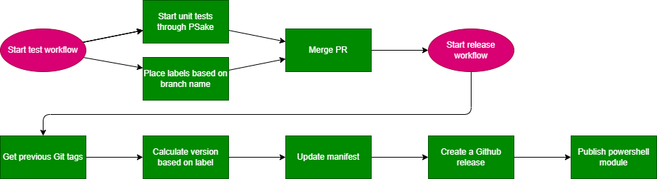

Workflow
In this document we will describe how our test en release workflow works. The test workflow starts when a pull request opens and the release workflow starts when there is a commit on the main branch with a change in the folder InSpark.InfrastructureAsCode.

Pull request labels
When a pull request opens the test workflow wil start to set labels based on the head branch. You can find the labels in the file pr-labeler.yml. The labels are used in other actions to determine the version or changes. The workflow will check if one of these labels are set and will then be added as a reviewer. You can also choose to set the labels manually if you are not on the right branch.
Reference:
Unit testing
Before merging the PR, PSake will test the module with Pester and PSScriptAnalyzer. This will be done multiple times on different operating systems (Windows, Linux, Mac OS). The Pester tests are located in tests/ and the PSScriptAnalyzer settings can be found in ScriptAnalyzerSettings.psd1.
Reference:
Search for previous tags
When the labels are present and the unit tests completes whithout any errors the pull request will be merged intoo the main branch and the release workflow will start. The first action that takes place is the search for previous tags. This is needed to determine the new version of the module. When there are no tags found, the version 0.0.0 will be given.
Reference:
Calculating the new version
All our versions are SemVer based and are calculated based on the labels that are set in the pull request. Examples:
- patch: 0.0.0 -> 0.0.1
- minor: 0.0.0 -> 0.1.0
- major: 0.0.0 -> 1.0.0
Updating the manifest
The manifest InSpark.InfrastructureAsCode.psd1 will be updated with the following information:
- New version
- Release notes (The name of the pull request)
- The Project URL (The Github repo URL)
Create a github release
There will be github release created based on a template that can be found in release.yml. The template will look for All pull request between to the versions based on SemVer and add the pull request title and link to different sections. Because this workflow runs after every pull request there will always be one pull request linked in the github release.
Reference:
Publishing the module
When the manifest is updated the module is ready to be published. We use PSake to publish the module as well. We first make sure that the PowerShell repository is registered. For this reason we switched to a Windows runner, because the CmdLet Register-PSRepository does not work on a Linux runner. After this we will PSake publish the module to the repository. This will only work if the version is higher then the latest available version.
Reference: